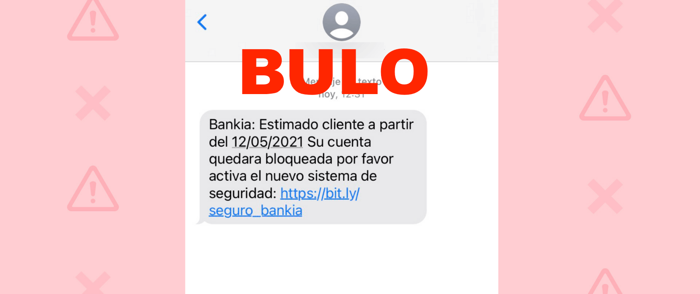

No, Manuela Carmena no ha dado positivo por coronavirus: lo ha tuiteado una cuenta falsa que se hace pasar por El País
Se ha viralizado un tuit de una cuenta falsa que se hace pasar por la de
El País y en la que alerta sobre una 'última hora: la exalcaldesa de Madrid, Manuela Carmena, da positivo en Coronavirus'.Algunos medios de comunicación lo han dado como cierto y han publicado contenidos afirmando que 'Manuela Carmena también tiene en coronavirus'.Es un bulo.
La cuenta desde la que se ha publicado este mensaje, @GjisPoric, ha utilizado el avatar de
El País y ha cambiado su nombre por el del diario pero no corresponde con la real, @el_pais.
Además, la cuenta oficial de
El País fue creada en agosto de 2007.En cambio, la cuenta desde la que se ha tuiteado este mensaje fue creada en diciembre de 2017.Actualmente, el tuit ya se ha borrado.
Desde
Maldita.es nos hemos puesto en contacto con Más Madrid y nos han confirmado que 'Manuela Carmena no ha dado positivo en coronavirus' y que 'se trata de un una cuenta 'fake' de
El País' . El jefe de prensa de Manuela Carmena también nos ha confirmado que no es cierto: 'ni tiene síntomas, ni se ha hecho pruebas, ni nada de eso.Es todo falso'.
Posted On: 2020-03-10T00:00:00


Content Date: 2020-03-10
Download Date: 2021-05-13
Document ID: L0C04C95X